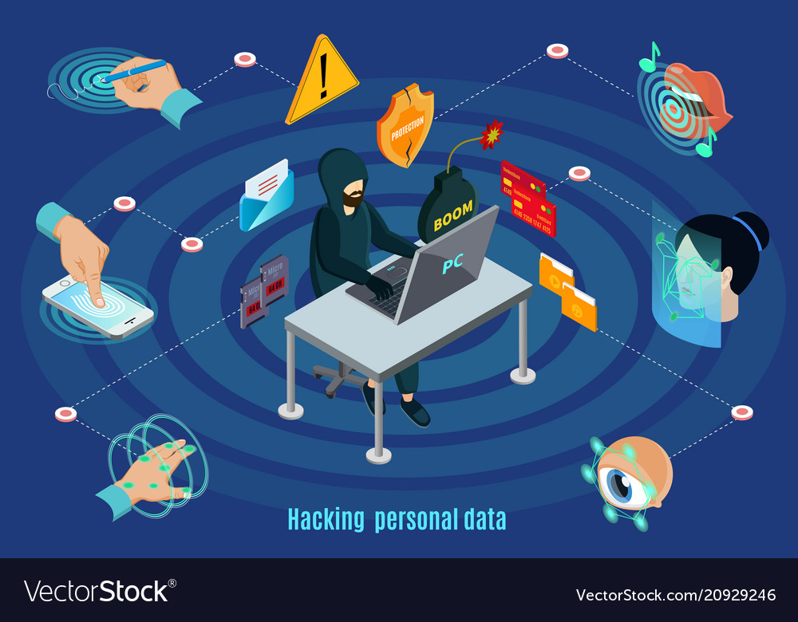

Biometric security has replaced passwords, security questions and PINs, but does that mean that it is safe? When we think about all the passwords that we have for different devices and websites, it can get overwhelming to keep track of them all. And surely we all know someone whos Facebook or email has been hacked. With biometric security there’s no chance of forgetting your password or having someone hack your security questions with basic information that they have found on your Facebook. Because biometric data like fingerprint identification or retina scanning are so unique to an individual, this data is not easily accessible to hackers. Biometric security provides efficient and convenient verification using information that is distinct and individual. Over the last few decades, it has become widely used as a form of identification by financial institutions, the unlocking of devices and in the military.

As with any technology there are some alarming concerns with biometrics. First of all, with these systems an individual generally provides plenty of personal information and that information could potentially be stolen or even used to by cybercriminals. In other words, it is easy to change your password but you cannot alter your iris or fingerprint scan. So, once the biometric data has been jeopardized the individual will have no control over it. This leads me to the next point on why Biometrics can be unsafe, hacking. Biometric systems are advancing every day and becoming the new thing. Hacking is a concern in many aspects of technology but unfortunately since biometrics is becoming so popular the information of an individual can be accessible in more places which may not secure the stored information as well. Lastly, another concern with biometrics is that physical identity can be imitated. An example of this happening is, if an individual had left their fingerprint on a glass at a restaurant a criminal could easily copy your fingerprint and could conceivably use that information to hack into an individual’s account or device. There are some ways to protect your biometric data from being exposed or misused. Software current is a great way to keep devices protected. Every once in awhile a device is needed for a software update and it is crucial to install it right when it is suggested as this can decrease the chance of the device being harmed from security flaws. Another way to protect your information is by creating strong passwords. By having strong passwords it is less likely to have your information hacked as it is more difficult to attain it. Biometric data is an advancing technology that has made many positive impacts within the security world. Although it may manifest a few concerns there are a couple key ways to protect personal information that will reduce the opportunity of being hacked. With taking the right precautions biometric systems can be a secure and helpful technology for all.
References
Porter, K. (n.d.). Biometrics and biometric data: What is it and is it secure? Retrieved from https://us.norton.com/internetsecurity-iot-biometrics-how-do-they-work-are-they-safe.html.
Images
“Biometric Hacking” https://www.vectorstock.com/royalty-free-vector/isometric-biometric-hacking-protection-concept-vector-20929246